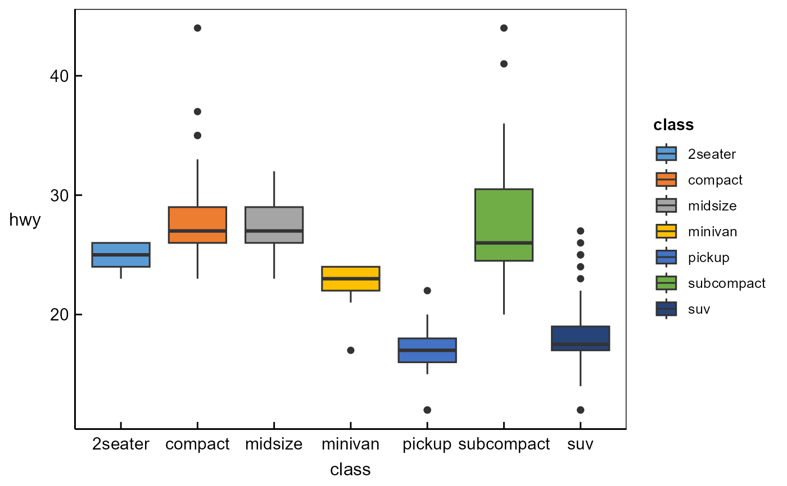
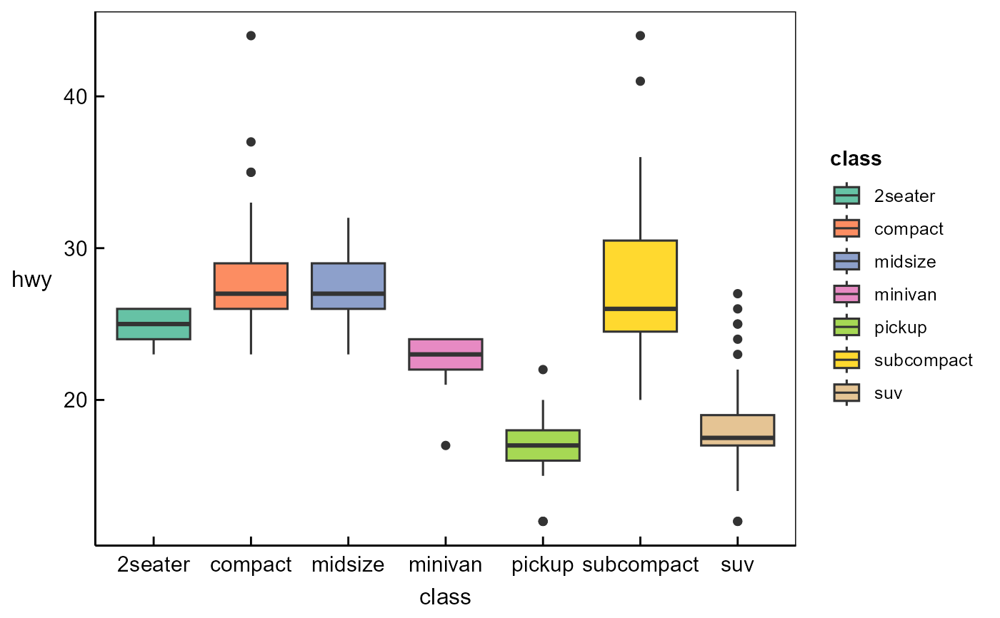
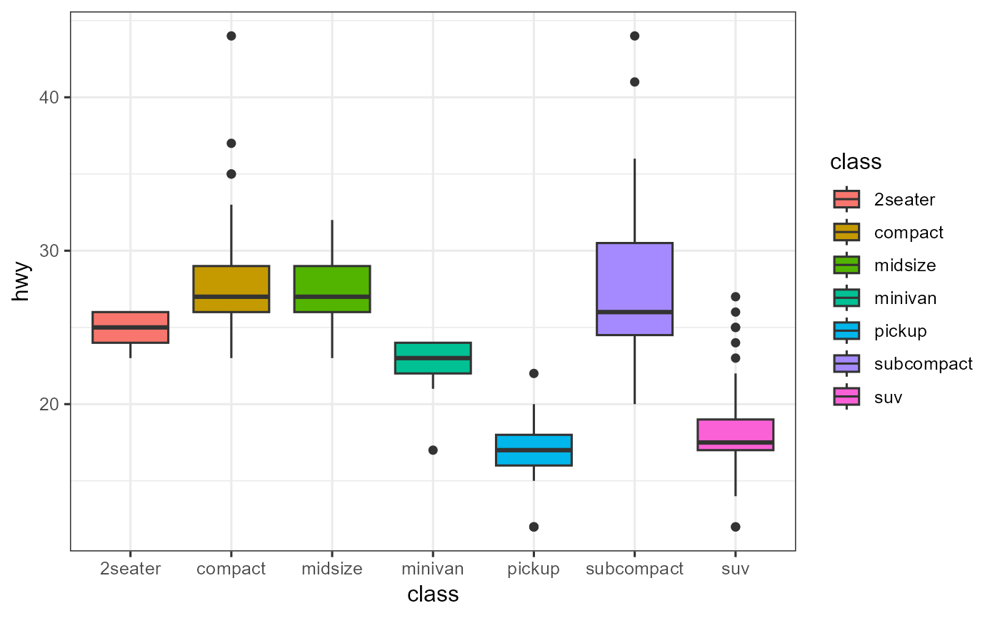

One-stop function that applies the complete visual style of a target
graphing software to a ggplot2 plot. Each style bundles a theme,
colour scale, and fill scale. Scales are additive: user-supplied
scales added after ggchoice() take priority.
Usage
ggchoice(
style = c("ggplot2", "prism", "spss", "origin", "stata", "academic", "sigmaplot",
"jmp", "matlab", "minitab", "medcalc"),
base_size = 12,
base_family = NULL,
axis_offset = FALSE,
...
)Arguments
- style
Character string naming the target software. Supported values:
"prism","spss","origin","stata","academic","sigmaplot","jmp","matlab","minitab","medcalc". If missing or"ggplot2", returnstheme_bw()(no scale change).- base_size
Base font size in pts (default 12).
- base_family
Base font family. All styles default to
"sans"(Arial/Helvetica).- axis_offset
If
TRUE, apply axis offset expansion to create the characteristic Prism/SPSS axis separation gap. Only effective for"prism"and"spss"styles; ignored for others. DefaultFALSE.- ...
Ignored (reserved for future use).
Examples
library(ggplot2)
# Prism-style boxplot
ggplot(mpg, aes(class, hwy)) +
geom_boxplot(aes(fill = class)) +
ggchoice("prism")

# Override fill scale after ggchoice
ggplot(mpg, aes(class, hwy)) +
geom_boxplot(aes(fill = class)) +
ggchoice("prism") +
scale_fill_brewer(palette = "Set2")
#> Scale for fill is already present.
#> Adding another scale for fill, which will replace the existing scale.

# Default ggplot2
ggplot(mpg, aes(class, hwy)) +
geom_boxplot(aes(fill = class)) +
ggchoice()

# Prism with axis offset: ggchoice("prism", axis_offset = TRUE)